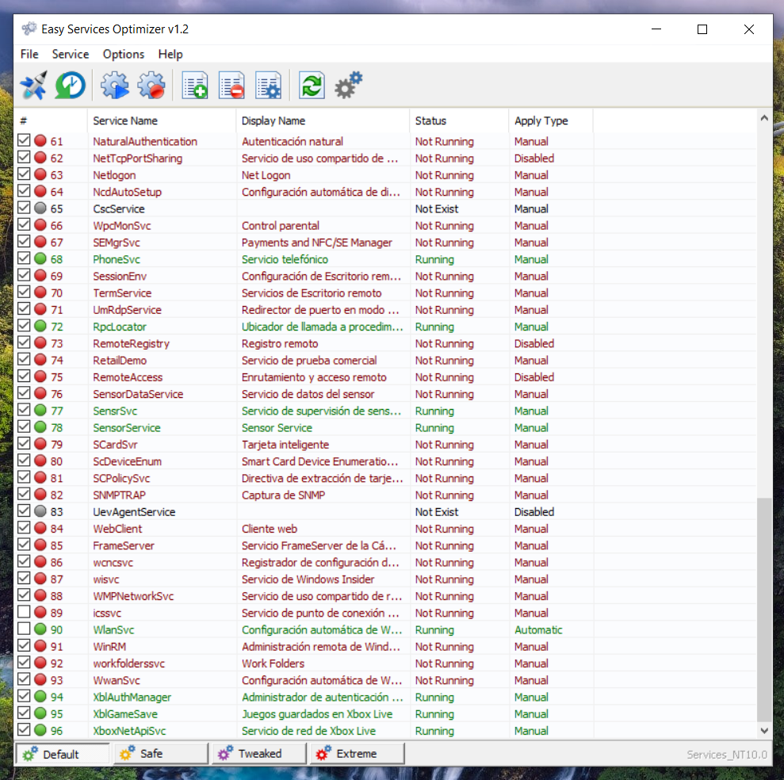
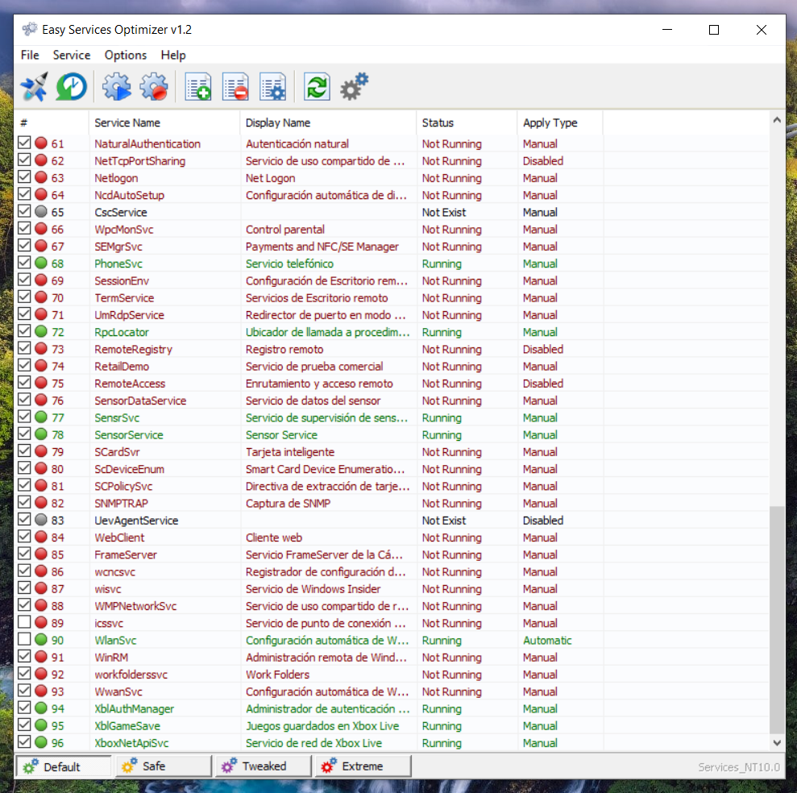

Paso 1
Descargar la version de prueba de Minecraft desde la Microsoft Store y los archivos necesarios
Descargar ArchivosPaso 2
Instalar la aplicacion "IObit_setup"

Paso 3
Entrar a la carpeta de "Reemplazar Archivos" > "System32" y COPIAR el nombre del archivo que esta dentro

Paso 4
Entrar a "Este Equipo" > "Windows (C:)" > "Windows" > "System 32" y en el apartado de "Buscar en System32" pegar el nombre del archivo que copiamos anteriormente


Paso 5
Una vez encontrado el archivo, dar CLICK DERECHO y dar CLICK EN "IObit Unlocker", despues tocar el boton de triangulo hacia abajo y "Desbloquear & Eliminar"

Paso 6
Una vez eliminado el archivo, regresamos a "Reemplazar archivos" > "System32" y COPIAMOS el archivo al que copiamos el nombre anteriormente
Paso 7
Volvemos a entrar a "Este Equipo" > "Windows (C:)" > "Windows" > "System 32" y pegamos el archivo con Control + V o CLICK DERECHO y PEGAR

Paso 8
REPETIR lo mismo con la carpeta "SysWOW64"
Paso 9
Despues de reemplazar los dos archivos, vamos a la carpeta "Activar Servicios Xbox" y ejecutamos el programa de "eso.exe"

 


Paso 10
Buscamos los servicios de color rojo (casi siempre estan hasta abajo):
-XblGameSave
-XboxNetApiSvc
Una vez encontrados, damos CLICK DERECHO, "Start service" y verificamos que estan en color verde